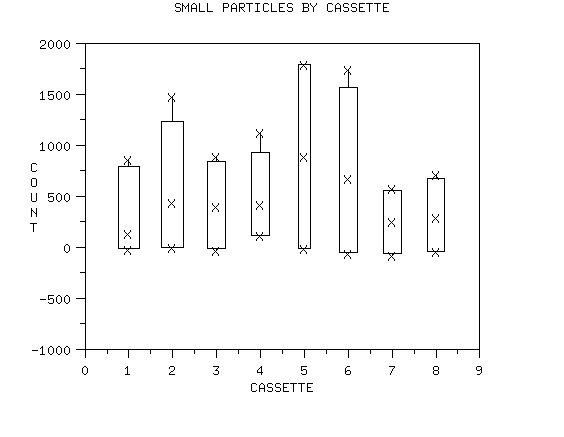
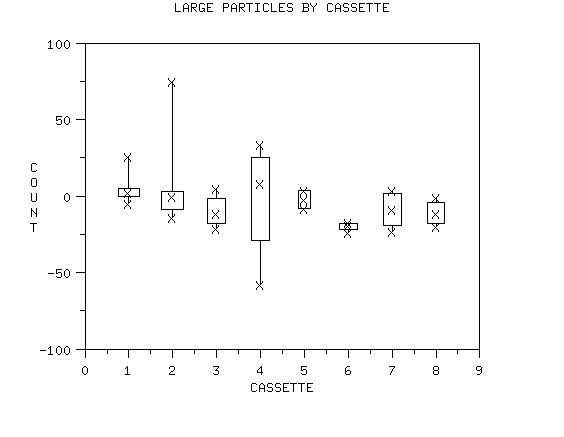
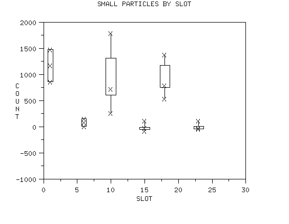
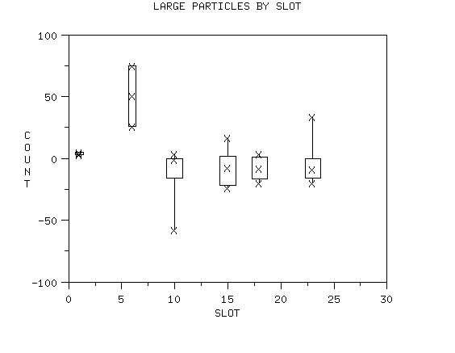
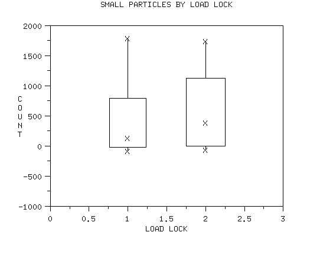
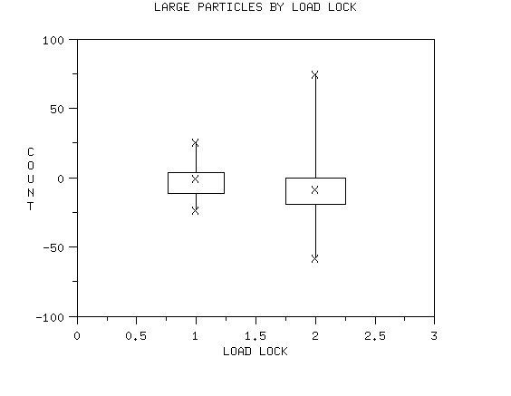
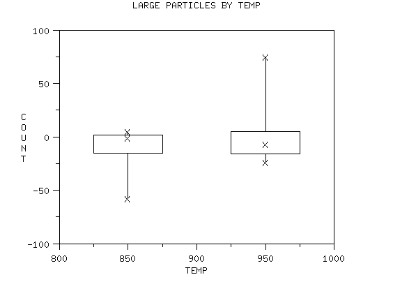

3.
Production
Process Characterization
3.4.
Data Analysis for PPC
3.4.2.
Exploring Relationships
3.4.2.2.
|
Exploring Main Effects
|
|
|
The next step is to look for main effects
|
The next step in the exploratory analysis of our data is to see
which factors have an effect on which response variables and to
quantify that effect.
Scatter plots and
box plots will be the
tools of choice here.
|
|
Watch out for varying sample sizes across levels
|
This step is relatively self explanatory. However there are two
points of caution. First, be cognizant of not only the trends in
these graphs but also the amount of data represented in those trends.
This is especially true for categorical explanatory variables. There
may be many more observations in some levels of the categorical
variable than in others. In any event, take unequal sample sizes into
account when making inferences.
|
|
Graph implicit as well as explicit explanatory variables
|
The second point is to be sure to graph the responses against
implicit explanatory variables (such as observation order) as well
as the explicit explanatory variables. There may be interesting insights
in these hidden explanatory variables.
|
|
Example: wafer processing
|
In the example below, we have collected data on the particles added
to a wafer during a particular processing step. We ran a number
of cassettes through the process and sampled wafers from certain
slots in the cassette. We also kept track of which load lock the wafers
passed through. This was done for two different process temperatures. We
measured both small particles (< 2 microns) and large particles
(> 2 microns). We plot the responses (particle counts) against each
of the explanatory variables.
|
|
Cassette does not appear to be an important factor for small
or large particles
|
This first graph is a box
plot of the number of small particles added for each cassette
type. The "X"'s in the plot represent the maximum, median, and
minimum number of particles.

The second graph is a box plot of the number of large particles added
for each cassette type.

We conclude from these two box plots that cassette does not appear
to be an important factor for small or large particles.
|
|
There is a difference between slots for small particles, one
slot is different for large particles
|
We next generate box plots of small and large particles for
the slot variable. First, the box plot for small particles.

Next, the box plot for large particles.

We conclude that there is a difference between slots for small
particles. We also conclude that one slot appears to be different
for large particles.
|
|
Load lock may have a slight effect
for small and large particles
|
We next generate box plots of small and large particles for
the load lock variable. First, the box plot for small particles.

Next, the box plot for large particles.

We conclude that there may be a slight effect for load lock for
small and large particles.
|
|
For small particles, temperature has a strong effect on both
location and spread. For large particles, there may be a slight
temperature effect but this may just be due to the outliers
|
We next generate box plots of small and large particles for
the temperature variable. First, the box plot for small particles.

Next, the box plot for large particles.
'
We conclude that temperature has a strong effect on both location
and spread for small particles. We conclude that there might
be a small temperature effect for large particles, but this may
just be due to outliers.
|